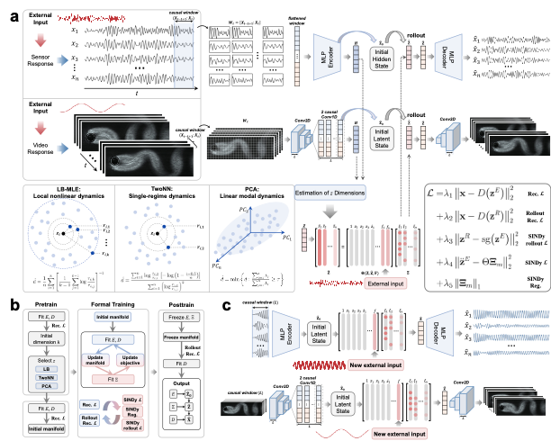

非线性动力系统建模 与科学发现Nonlinear Dynamical Systems & Scientific Discovery
许多受迫物理系统只有高维响应可以观测，而真正控制其演化的状态与方程隐藏在数据之中。这条研究主线以 FLARE 为核心，联合学习低维响应坐标、受外部输入驱动的稀疏演化方程与高维重构映射；进一步通过 FLARE-T 将数值模拟中学到的动力学迁移到稀疏实测数据，以服务于场地响应预测。Many forced physical systems are observed only through high-dimensional responses, while the states and equations governing their evolution remain hidden. Centered on FLARE, this program jointly learns low-dimensional response coordinates, sparse evolution equations driven by external inputs, and a reconstruction map to full observations. FLARE-T then transfers simulation-learned dynamics to sparse measurements for seismic site-response prediction.
MODULE 01
潜在状态学习Latent State Learning
从响应历史而非单一时刻估计能够表征系统演化的低维状态。Estimating low-dimensional dynamic states from response histories rather than isolated snapshots.
MODULE 02
受迫方程发现Forced Equation Discovery
显式分离系统状态与外部输入，识别可积分、可解释的稀疏潜在动力学。Separating system state from external forcing to identify sparse, interpretable, integrable dynamics.
MODULE 03
跨域迁移Cross-Domain Transfer
将有限元密集响应中的动力学结构迁移到稀疏传感器与有限实测记录。Transferring dynamic structure from dense finite-element responses to sparse sensors and limited records.
代表工作Selected Work

FLARE·arXiv · 2026
Discovering Latent Response Laws in Forced Physical Systems
Yi Zhu, Su Chen, Xiaojun Li, Xiuli Du
提出 Forced Latent Autoencoder for Response Equations：从高维时序或视频响应中学习紧凑状态，识别包含外部输入的稀疏潜在方程，并通过方程积分重构长时程高维响应。该框架面向未知有效状态、复杂观测与未见输入下的可解释预测。Introduces the Forced Latent Autoencoder for Response Equations: it learns compact states from high-dimensional time series or video, identifies sparse latent equations with external forcing, and reconstructs long-horizon responses from equation rollouts under unseen inputs.
Seismic Site Response Prediction from Sparse Observations Using Finite-Element-Pretrained Latent Dynamics
Yi Zhu, Su Chen*, Xiaojun Li
提出可迁移的 FLARE-T：先从有限元密集响应预训练潜在流形与受迫动力学，再将稀疏传感器编码到同一坐标系，最后用少量实测记录校正方程系数。该方法用于离心模型与罗东场地的多深度地震响应预测。Introduces FLARE-T: latent manifolds and forced dynamics are pretrained on dense finite-element responses, sparse sensors are mapped into the same coordinates, and equation coefficients are calibrated with limited records. The method is evaluated on centrifuge and Lotung multi-depth site responses.